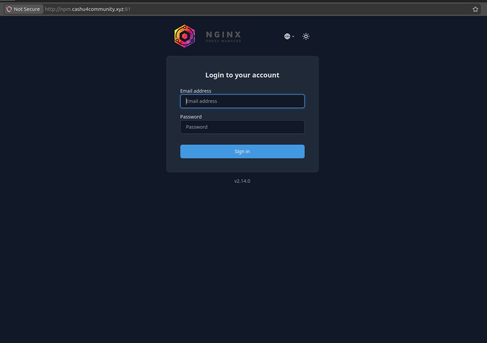

Configuración de acceso con Nginx Proxy Manager
En esta etapa vas a configurar el acceso externo a tus servicios (Lightning Terminal, LNBits, Cashu, Orchard, etc.) usando Nginx Proxy Manager, que actúa como proxy inverso y gestor de certificados SSL.
Acceso inicial
El contenedor ya viene preconfigurado, por lo que no necesitas crear usuario:
- Usuario:
changeme@domin.com - Contraseña:
ch4ng3me*-
Accede desde tu navegador a http://npm.cashu4community.xyz:81. Como el acceso es por primera vez debemos hacerlo usando el puerto 81 y mediante una conexión insegura. En el siguiente paso corregiremos esto.

1. Crear un Proxy Host
En el panel principal no hay hosts configurados aún. Haz clic en el botón "Add Proxy Host".

2. Configurar el Proxy Host

Sección: Details
Domain Names
Introduce el dominio o subdominio que usarás. Ejemplo:
npm.cashu4community.xyzScheme
http- si el servicio interno no usa SSL (lo más común en Docker)https- si el contenedor ya expone HTTPS
En este caso: http
Forward Hostname / IP
Es el nombre del contenedor o IP interna en Docker. Ejemplo:
npmForward Port
Puerto interno del servicio. Ejemplo:
81Access List
Déjalo en Publicly Accessible. Luego puedes restringirlo si quieres añadir autenticación.
Opciones (recomendado dejar activado)
- Cache Assets
- Block Common Exploits
- Websockets Support
Sección: SSL
Aquí defines todo lo relacionado al certificado SSL y la conexión HTTPS.

SSL Certificate
Como es un registro nuevo, selecciona Request a new Certificate.
Opciones (recomendado dejar activado)
- Force SSL
- HTTP/2 Support
- HSTS Enabled
3. Guardar
Haz clic en Save. Si todo está bien configurado, el dominio apuntará correctamente al contenedor y ya tendrás acceso desde el navegador.
4. Eliminar entrada en docker-compose.yml
Ya hemos configurado el Proxy Host para el propio servicio NPM y podemos acceder mediante HTTPS usando el puerto 443. Ahora deshabilitaremos el acceso por el puerto 81.
Buscamos el servicio npm y en la sección ports: eliminamos el puerto 81:
ports:
- '80:80'
- '443:443'
- '81:81'Quedando así:
ports:
- '80:80'
- '443:443'5. Reconstruir el contenedor NPM
./recreate.sh npmCómo encaja esto en tu infraestructura
Hasta aquí hemos configurado un registro Proxy Host y el acceso al NPM de forma segura. Ahora podemos configurar el resto de los servicios ya que cada uno tendrá su propio Proxy Host:
| Dominio | Esquema | Reenvío de dominio / IP | Puerto interno |
|---|---|---|---|
| npm.cashu4community.xyz | http | npm | 81 |
| lit.cashu4community.xyz | https | lit | 8443 |
| lnbits.cashu4community.xyz | http | lnbits | 5000 |
| mint.cashu4community.xyz | http | cashu | 3336 |
| orchard.cashu4community.xyz | http | orchard | 3326 |